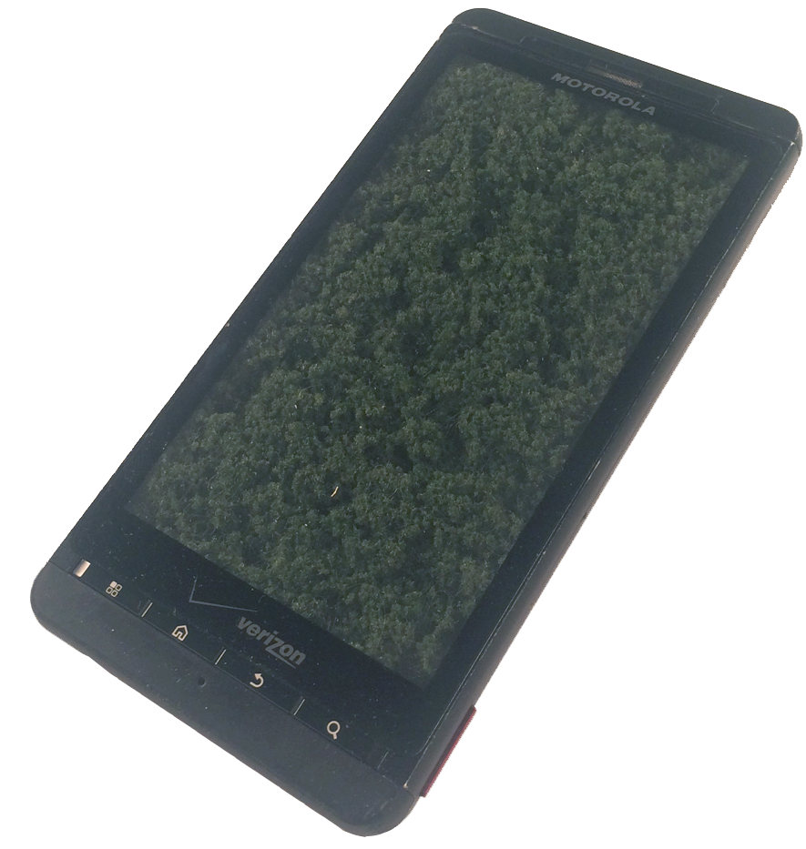
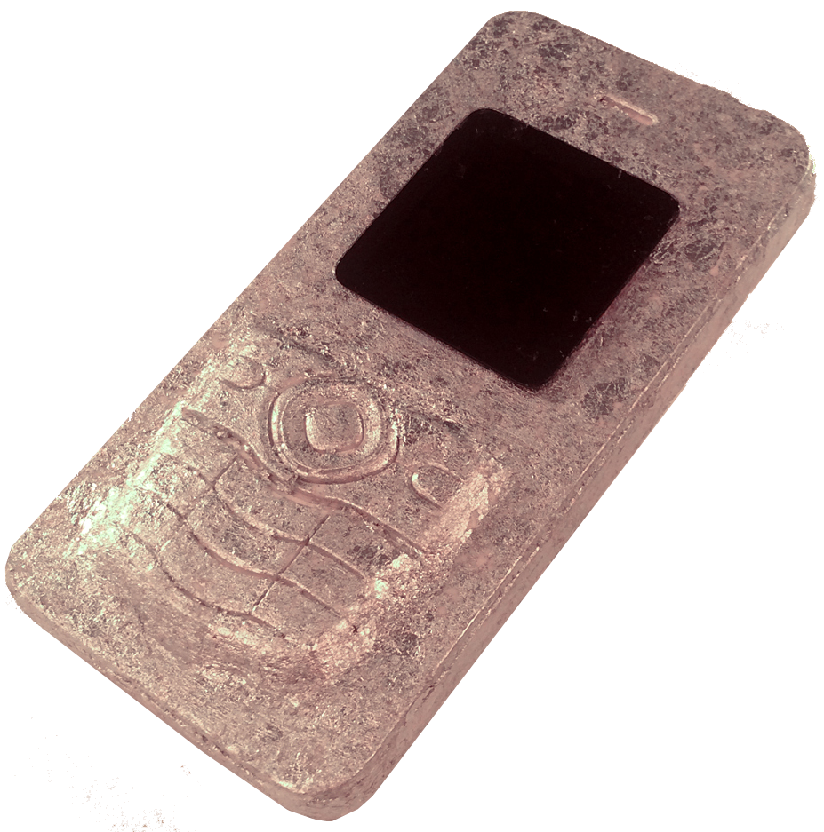
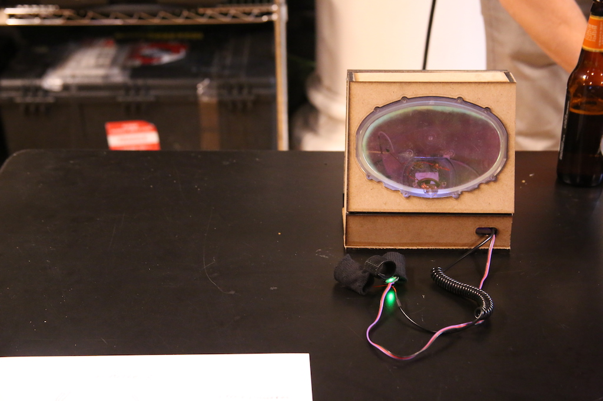
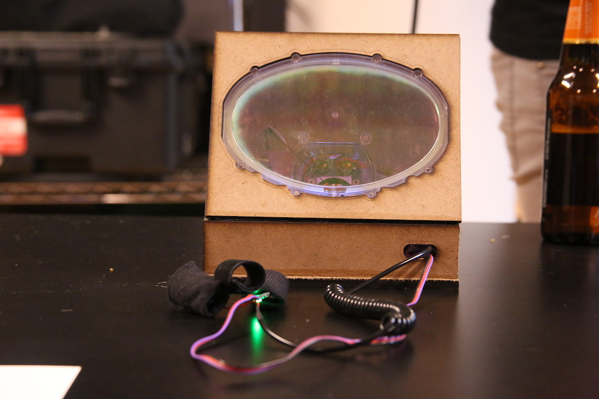
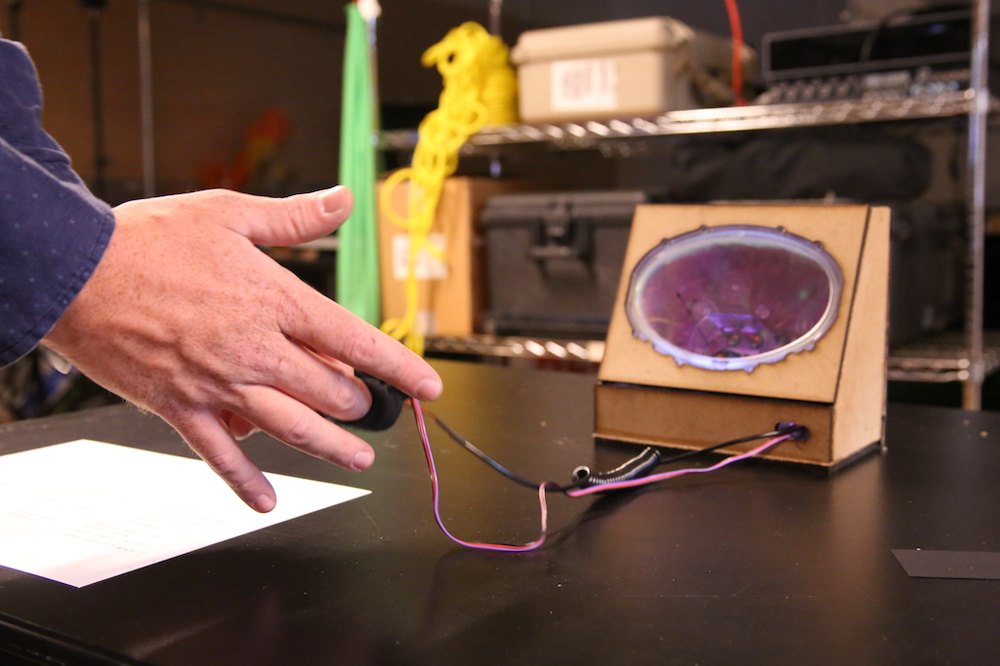

PHONES

iPhone 4, Sugru, iHome control buttons

Fake moss, Droid X

Plaster, silver leaf, iPod Nano 6th generation screen
E-METER



At ITP camp 2017 I attempted to recreate an "e-meter" (essentially a branded lie detector test) used by Scientologists to emotionally interrogate and manipulate members of their church.
The dial is programmed through an Arduino to twitch and fluctuate according to data taken from a heart rate sensor and a skin conductance sensor, both to be worn on the fingers.
The device was constructed by me with help and support from some wonderful ITP camp counselors.